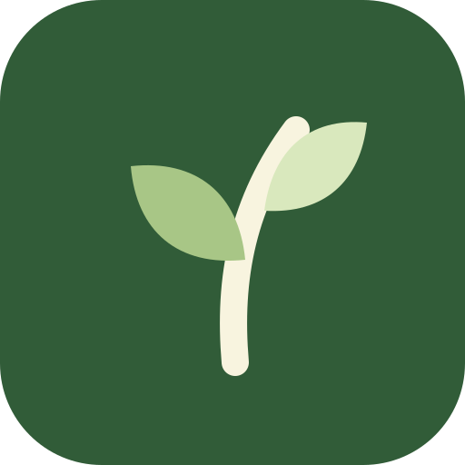

Gärten verwalten
Lege einen oder mehrere Gärten an und halte die wichtigsten Informationen übersichtlich zusammen.

GartenOneGartenOne bringt deine Gärten, Beete und Gartenarbeiten übersichtlich an einen Ort – auf dem Handy und am Computer.
Die App ist noch nicht öffentlich. Die Anmeldung funktioniert nur für bereits freigeschaltete Testkonten.
4 Beete · 6 Bereiche
DIE ERSTE VERSION
Lege einen oder mehrere Gärten an und halte die wichtigsten Informationen übersichtlich zusammen.
Die Grundlage für Beete, Pflanzen, Aufgaben und spätere Gartenplanung ist bereits vorbereitet.
Jedes Konto sieht ausschließlich die eigenen Gärten. Die Daten werden sicher voneinander getrennt.
PRIVATE VORSCHAU
Aktuell teste ich die Grundlagen im echten Einsatz. Deshalb ist die Registrierung geschlossen. Wer GartenOne ausprobieren und Feedback geben möchte, kann mir eine kurze E-Mail schreiben.
INTERESSE AN GARTENONE?
Schreib mir kurz, wie du deinen Garten organisierst und was dir dabei heute fehlt.
Testzugang anfragen